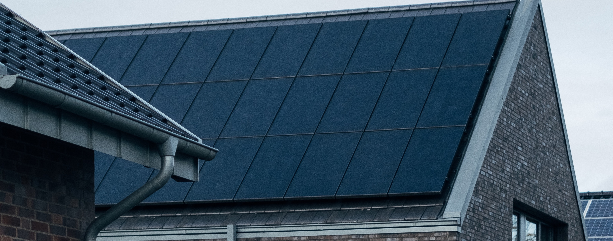
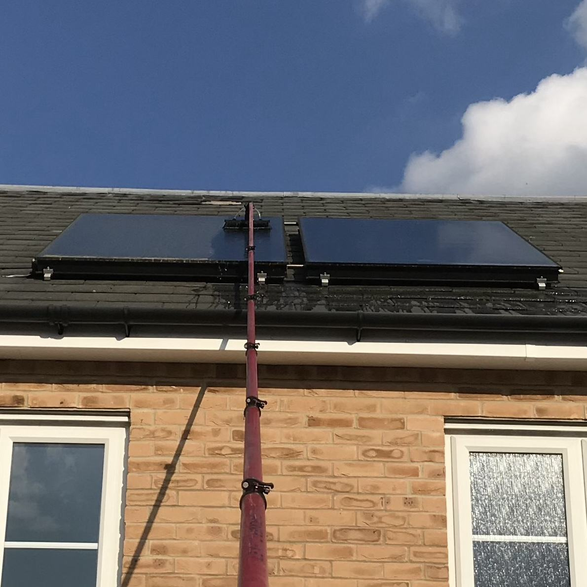
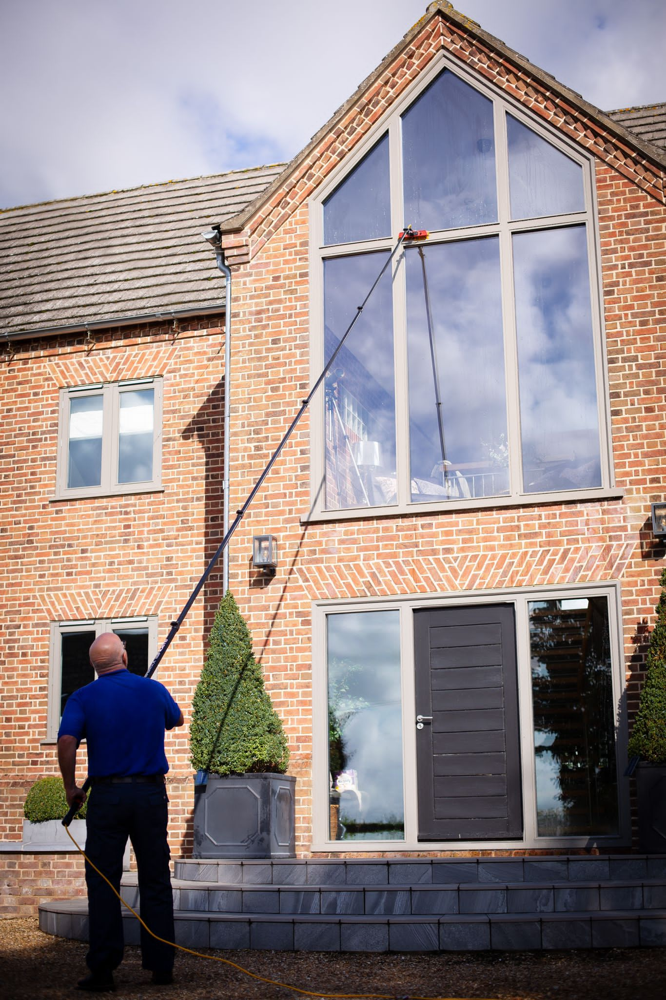

Home / Solar Panels
Solar panel cleaning in Watton, Thetford & nearby
Dirt, lichen and bird mess build up on panels over time. Andrew cleans them safely from the ground with specialist equipment, so they can keep working at their best.

- 5.0 on Google from 50+ reviews
- Fully insured with public liability cover
- 10+ years in the trade
- Free re-clean if you are not happy within 24 hours
What's included
- Dirt, lichen and bird mess removed
- Cleaned safely from the ground
- Safe, eco-friendly cleaning methods
- Flexible scheduling to suit you
- Satisfaction guarantee for peace of mind

How booking works
Get in touch
Tell us what you need using the form, or give Andrew a call.
Get your quote
We can arrange a free visit, or you can simply send us photos of the property.
Book a date
Choose the services you'd like and we'll book a date that suits you.
Stay informed
You'll get a reminder the day before each clean, and a message when it's done.

Why people choose KAT
- Specialist equipment for panels
- Gentle techniques that protect your panels
- Over a decade of experience
- 5.0 rating from 50+ Google reviews
Questions people ask
Why clean solar panels?
Dirt, lichen and bird mess block sunlight. Keeping panels clean helps them work as well as they can.
Do you need to go on the roof?
No. Panels are cleaned safely from the ground using specialist equipment.
Where we work
- Watton
- Thetford
- Swaffham
- Attleborough
- Hingham
- Great Hockham
Based in Watton, covering the surrounding villages too. Not sure if you're in the area? Give Andrew a call.
Get a free quote
Tell us a little about the property and Andrew will reply with a price. Most quotes can be done from photos.